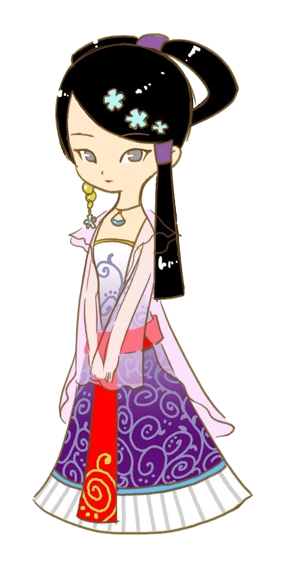

华月
カゲツ
CV.
蒋里美
チャン・リーメイ
诞生日
春5日
喜欢的颜色
蓝色
一个安静而神秘的女人。她的一切都笼罩在神秘之中，包括她的住处和出生地。
有传言说她实际上是该地区的女神...

最喜欢
：豆奶布丁
喜欢
：花、香草类
讨厌
：全部酒类、金、钻石、紫色项链、硬币类
最讨厌
：究极咖喱
爱情事件
事件 1
紫心♥
条件
季节
：春、夏、秋、冬
地点
：社内
日期
：任何时候
天气
：雨雪之外
时间
：17:00〜19:59
其他
：向华月送礼物次数达到30次以上
选项
花钱就能买到
すぐに買えるから
(愛情度－2000)
每一个都很珍惜呢
一つ一つのものを大切にしている
(愛情度＋2000)
事件 2
蓝心♥
条件
季节
：春、夏、秋
地点
：社内
日期
：任何时候
天气
：晴、阴、雪
时间
：17:00〜18:59
其他
：向华月送礼物次数达到30次以上、扩大田地1次
选项
挺不容易的…
大変だよ…
(愛情度－3000)
重要的家人一样
大切な家族だから
(愛情度＋3000)
事件 3
黄心♥
条件
季节
：春、夏、秋
地点
：社前
日期
：任何时候
天气
：晴、阴
时间
：00:00〜1:59
其他
：向华月送礼物次数达到80次以上
选项
我和你一起去！
一緒に行こう！
(愛情度＋4000)
下次再去吧
今日はやめとく
(愛情度－5000)
求婚
红心♥
条件
购买双人床以后
向华月送礼物次数达到120次以上
送出青之羽毛
华月爱情度+3000